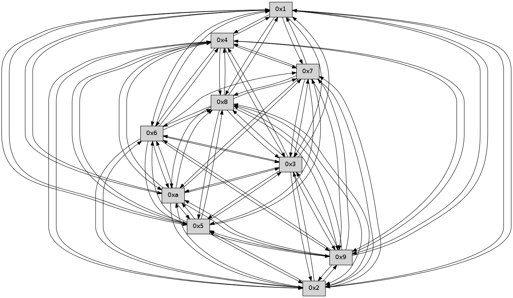

>> << IDX [start] -100 -25 -5 +0 +5 +25 +100 [200.613512039]
 Previous packets
----------------------------------------------------------------------
195.096586 beacon01(faad) #0 coord=01,02,03,04,05,06,07,0a,09,08 cycle=688.0ms assoc
-- color-indic=0 64 92 6a
195.106568 beacon02(faad) #0 coord=01,02,03,04,05,06,07,0a,09,08 cycle=688.0ms assoc 64 01 5b
195.116568 beacon03(faad) #0 coord=01,02,03,04,05,06,07,0a,09,08 cycle=688.0ms assoc 64 7b 16
195.126569 beacon04(faad) #0 coord=01,02,03,04,05,06,07,0a,09,08 cycle=688.0ms assoc 64 0c fc
195.136569 beacon05(faad) #0 coord=01,02,03,04,05,06,07,0a,09,08 cycle=688.0ms assoc 64 76 b1
195.146570 beacon06(faad) #0 coord=01,02,03,04,05,06,07,0a,09,08 cycle=688.0ms assoc 64 f8 66
195.156571 beacon07(faad) #0 coord=01,02,03,04,05,06,07,0a,09,08 cycle=688.0ms assoc 64 82 2b
195.166574 beacon0a(faad) #0 coord=01,02,03,04,05,06,07,0a,09,08 cycle=688.0ms assoc 64 f3 20
195.176573 beacon09(faad) #0 coord=01,02,03,04,05,06,07,0a,09,08 cycle=688.0ms assoc 64 7d f7
195.186574 beacon08(faad) #0 coord=01,02,03,04,05,06,07,0a,09,08 cycle=688.0ms assoc 64 07 ba
195.198053 [Hello(9): seq=72 sym=5,2,3,4,7,6,8,10,1 sysInfo= stat=5:11,0,0,0/2:14,0,0,0/3:3,0,0,0/4:7,0,0,0/7:9,0,0,0/6:15,0,0,0/8:0,0,0,0/10:12,0,0,0/1:12,0,0,0]
195.201073 [Hello(10): seq=61 sym=6,3,2,5,9,8,7,4,1 sysInfo= stat=6:2,0,0,0/3:3,0,0,0/2:7,0,0,0/5:11,0,0,0/9:3,0,0,0/8:0,0,0,0/7:4,0,0,0/4:7,0,0,0/1:1,0,0,0]
195.205049 [Hello(6): seq=129 sym=2,3,5,4,7,9,8,10,1 sysInfo= stat=2:10,0,0,0/3:3,0,0,0/5:0,0,0,0/4:15,0,0,0/7:15,0,0,0/9:9,0,0,0/8:6,0,0,0/10:7,0,0,0/1:12,0,0,0]
195.207587 [Hello(8): seq=72 sym=5,2,3,4,7,6,9,10,1 sysInfo= stat=5:7,0,0,0/2:4,0,0,0/3:7,0,0,0/4:15,0,0,0/7:6,0,0,0/6:12,0,0,0/9:14,0,0,0/10:11,0,0,0/1:15,0,0,0]
195.216366 [Hello(7): seq=129 sym=2,3,5,6,4,8,9,10,1 sysInfo= stat=2:4,0,0,0/3:3,0,0,0/5:3,0,0,0/6:4,0,0,0/4:11,0,0,0/8:5,0,0,0/9:4,0,0,0/10:5,0,0,0/1:14,0,0,0]
----------------------------------------------------------------------
195.884717 beacon01(faad) #0 coord=01,02,03,04,05,06,07,0a,09,08 cycle=688.0ms assoc
-- color-indic=0 64 56 64
195.894699 beacon02(faad) #0 coord=01,02,03,04,05,06,07,0a,09,08 cycle=688.0ms assoc 64 c5 55
195.904700 beacon03(faad) #0 coord=01,02,03,04,05,06,07,0a,09,08 cycle=688.0ms assoc 64 bf 18
195.914701 beacon04(faad) #0 coord=01,02,03,04,05,06,07,0a,09,08 cycle=688.0ms assoc 64 c8 f2
195.924700 beacon05(faad) #0 coord=01,02,03,04,05,06,07,0a,09,08 cycle=688.0ms assoc 64 b2 bf
195.934700 beacon06(faad) #0 coord=01,02,03,04,05,06,07,0a,09,08 cycle=688.0ms assoc 64 3c 68
195.944700 beacon07(faad) #0 coord=01,02,03,04,05,06,07,0a,09,08 cycle=688.0ms assoc 64 46 25
195.954706 beacon0a(faad) #0 coord=01,02,03,04,05,06,07,0a,09,08 cycle=688.0ms assoc 64 37 2e
195.964706 beacon09(faad) #0 coord=01,02,03,04,05,06,07,0a,09,08 cycle=688.0ms assoc 64 b9 f9
195.974705 beacon08(faad) #0 coord=01,02,03,04,05,06,07,0a,09,08 cycle=688.0ms assoc 64 c3 b4
195.985880 [Hello(3): seq=130 sym=5,7,6,4,2,8,9,10,1 sysInfo= stat=5:9,0,0,0/7:2,0,0,0/6:12,0,0,0/4:3,0,0,0/2:9,0,0,0/8:5,0,0,0/9:15,0,0,0/10:1,0,0,0/1:2,0,0,0]
195.988851 [Hello(2): seq=128 sym=4,5,7,6,3,9,8,10,1 sysInfo= stat=4:3,0,0,0/5:9,0,0,0/7:9,0,0,0/6:14,0,0,0/3:4,0,0,0/9:1,0,0,0/8:0,0,0,0/10:9,0,0,0/1:8,0,0,0]
195.991763 [Hello(4): seq=130 sym=5,7,6,2,3,9,8,10,1 sysInfo= stat=5:9,0,0,0/7:12,0,0,0/6:12,0,0,0/2:10,0,0,0/3:9,0,0,0/9:12,0,0,0/8:1,0,0,0/10:15,0,0,0/1:14,0,0,0]
195.998951 [Hello(1): seq=38 sym=4,2,9,5,10,3,8,6,7 sysInfo= stat=4:1,0,0,0/2:4,0,0,0/9:13,0,0,0/5:6,0,0,0/10:5,0,0,0/3:0,0,0,0/8:10,0,0,0/6:15,0,0,0/7:0,0,0,0]
196.008165 [Hello(5): seq=130 sym=7,6,4,2,3,9,8,10,1 asym= sysInfo= stat=7:6,0,0,0/6:2,0,0,0/4:1,0,0,0/2:14,0,0,0/3:12,0,0,0/9:11,0,0,0/8:5,0,0,0/10:14,0,0,0/1:14,0,0,0]
----------------------------------------------------------------------
196.672849 beacon01(faad) #0 coord=01,02,03,04,05,06,07,0a,09,08 cycle=688.0ms assoc
-- color-indic=0 64 ea 61
196.682831 beacon02(faad) #0 coord=01,02,03,04,05,06,07,0a,09,08 cycle=688.0ms assoc 64 79 50
196.692832 beacon03(faad) #0 coord=01,02,03,04,05,06,07,0a,09,08 cycle=688.0ms assoc 64 03 1d
196.702832 beacon04(faad) #0 coord=01,02,03,04,05,06,07,0a,09,08 cycle=688.0ms assoc 64 74 f7
196.712831 beacon05(faad) #0 coord=01,02,03,04,05,06,07,0a,09,08 cycle=688.0ms assoc 64 0e ba
196.722832 beacon06(faad) #0 coord=01,02,03,04,05,06,07,0a,09,08 cycle=688.0ms assoc 64 80 6d
196.732832 beacon07(faad) #0 coord=01,02,03,04,05,06,07,0a,09,08 cycle=688.0ms assoc 64 fa 20
196.742837 beacon0a(faad) #0 coord=01,02,03,04,05,06,07,0a,09,08 cycle=688.0ms assoc 64 8b 2b
196.752838 beacon09(faad) #0 coord=01,02,03,04,05,06,07,0a,09,08 cycle=688.0ms assoc 64 05 fc
196.762839 beacon08(faad) #0 coord=01,02,03,04,05,06,07,0a,09,08 cycle=688.0ms assoc 64 7f b1
196.773975 [Hello(10): seq=62 sym=6,3,2,5,9,8,7,4,1 sysInfo= stat=6:3,0,0,0/3:4,0,0,0/2:8,0,0,0/5:12,0,0,0/9:3,0,0,0/8:1,0,0,0/7:5,0,0,0/4:8,0,0,0/1:2,0,0,0]
196.777622 [Hello(9): seq=73 sym=5,2,3,4,7,6,8,10,1 sysInfo= stat=5:12,0,0,0/2:15,0,0,0/3:4,0,0,0/4:8,0,0,0/7:10,0,0,0/6:0,0,0,0/8:1,0,0,0/10:13,0,0,0/1:13,0,0,0]
196.780518 [Hello(6): seq=130 sym=2,3,5,4,7,9,8,10,1 sysInfo= stat=2:11,0,0,0/3:4,0,0,0/5:1,0,0,0/4:0,0,0,0/7:0,0,0,0/9:9,0,0,0/8:7,0,0,0/10:7,0,0,0/1:13,0,0,0]
196.788785 [Hello(7): seq=130 sym=2,3,5,4,8,9,10,1 sysInfo= stat=2:5,0,0,0/3:4,0,0,0/5:4,0,0,0/4:12,0,0,0/8:5,0,0,0/9:4,0,0,0/10:5,0,0,0/1:15,0,0,0]
----------------------------------------------------------------------
197.460982 beacon01(faad) #0 coord=01,02,03,04,05,06,07,0a,09,08 cycle=688.0ms assoc
-- color-indic=0 64 de 79
197.470965 beacon02(faad) #0 coord=01,02,03,04,05,06,07,0a,09,08 cycle=688.0ms assoc 64 4d 48
197.480964 beacon03(faad) #0 coord=01,02,03,04,05,06,07,0a,09,08 cycle=688.0ms assoc 64 37 05
197.490966 beacon04(faad) #0 coord=01,02,03,04,05,06,07,0a,09,08 cycle=688.0ms assoc 64 40 ef
197.500966 beacon05(faad) #0 coord=01,02,03,04,05,06,07,0a,09,08 cycle=688.0ms assoc 64 3a a2
197.510965 beacon06(faad) #0 coord=01,02,03,04,05,06,07,0a,09,08 cycle=688.0ms assoc 64 b4 75
197.520965 beacon07(faad) #0 coord=01,02,03,04,05,06,07,0a,09,08 cycle=688.0ms assoc 64 ce 38
197.530972 beacon0a(faad) #0 coord=01,02,03,04,05,06,07,0a,09,08 cycle=688.0ms assoc 64 bf 33
197.540970 beacon09(faad) #0 coord=01,02,03,04,05,06,07,0a,09,08 cycle=688.0ms assoc 64 31 e4
197.550970 beacon08(faad) #0 coord=01,02,03,04,05,06,07,0a,09,08 cycle=688.0ms assoc 64 4b a9
197.567098 [Hello(1): seq=39 sym=4,2,9,5,10,3,8,6,7 sysInfo= stat=4:1,0,0,0/2:4,0,0,0/9:14,0,0,0/5:7,0,0,0/10:6,0,0,0/3:0,0,0,0/8:10,0,0,0/6:0,0,0,0/7:1,0,0,0]
197.570707 [Hello(3): seq=131 sym=5,7,6,4,2,8,9,10,1 sysInfo= stat=5:10,0,0,0/7:3,0,0,0/6:13,0,0,0/4:4,0,0,0/2:10,0,0,0/8:5,0,0,0/9:0,0,0,0/10:2,0,0,0/1:3,0,0,0]
197.577691 [Hello(4): seq=131 sym=5,7,6,2,3,9,8,10,1 sysInfo= stat=5:10,0,0,0/7:13,0,0,0/6:13,0,0,0/2:10,0,0,0/3:9,0,0,0/9:13,0,0,0/8:1,0,0,0/10:0,0,0,0/1:15,0,0,0]
----------------------------------------------------------------------
198.249119 beacon01(faad) #0 coord=01,02,03,04,05,06,07,0a,09,08 cycle=688.0ms assoc
-- color-indic=0 64 62 7c
198.259101 beacon02(faad) #0 coord=01,02,03,04,05,06,07,0a,09,08 cycle=688.0ms assoc 64 f1 4d
198.269101 beacon03(faad) #0 coord=01,02,03,04,05,06,07,0a,09,08 cycle=688.0ms assoc 64 8b 00
198.279101 beacon04(faad) #0 coord=01,02,03,04,05,06,07,0a,09,08 cycle=688.0ms assoc 64 fc ea
198.289102 beacon05(faad) #0 coord=01,02,03,04,05,06,07,0a,09,08 cycle=688.0ms assoc 64 86 a7
198.299103 beacon06(faad) #0 coord=01,02,03,04,05,06,07,0a,09,08 cycle=688.0ms assoc 64 08 70
198.309103 beacon07(faad) #0 coord=01,02,03,04,05,06,07,0a,09,08 cycle=688.0ms assoc 64 72 3d
198.319105 beacon0a(faad) #0 coord=01,02,03,04,05,06,07,0a,09,08 cycle=688.0ms assoc 64 03 36
198.329107 beacon09(faad) #0 coord=01,02,03,04,05,06,07,0a,09,08 cycle=688.0ms assoc 64 8d e1
198.339106 beacon08(faad) #0 coord=01,02,03,04,05,06,07,0a,09,08 cycle=688.0ms assoc 64 f7 ac
198.350282 [Hello(9): seq=74 sym=5,2,3,4,7,6,8,10,1 sysInfo= stat=5:13,0,0,0/2:15,0,0,0/3:5,0,0,0/4:9,0,0,0/7:11,0,0,0/6:1,0,0,0/8:1,0,0,0/10:13,0,0,0/1:14,0,0,0]
198.353268 [Hello(8): seq=74 sym=5,2,3,4,7,6,9,10,1 sysInfo= stat=5:8,0,0,0/2:6,0,0,0/3:9,0,0,0/4:1,0,0,0/7:8,0,0,0/6:13,0,0,0/9:15,0,0,0/10:11,0,0,0/1:1,0,0,0]
198.361097 [Hello(6): seq=131 sym=2,3,5,4,7,9,8,10,1 sysInfo= stat=2:12,0,0,0/3:5,0,0,0/5:1,0,0,0/4:1,0,0,0/7:1,0,0,0/9:9,0,0,0/8:7,0,0,0/10:7,0,0,0/1:14,0,0,0]
198.363603 [Hello(7): seq=131 sym=2,3,5,4,8,9,10,1 sysInfo= stat=2:6,0,0,0/3:5,0,0,0/5:4,0,0,0/4:13,0,0,0/8:5,0,0,0/9:4,0,0,0/10:5,0,0,0/1:0,0,0,0]
198.372883 [Hello(10): seq=63 sym=6,3,2,5,9,8,7,4,1 sysInfo= stat=6:4,0,0,0/3:5,0,0,0/2:9,0,0,0/5:12,0,0,0/9:4,0,0,0/8:1,0,0,0/7:6,0,0,0/4:9,0,0,0/1:3,0,0,0]
----------------------------------------------------------------------
199.037250 beacon01(faad) #0 coord=01,02,03,04,05,06,07,0a,09,08 cycle=688.0ms assoc
-- color-indic=0 64 a6 72
199.047235 beacon02(faad) #0 coord=01,02,03,04,05,06,07,0a,09,08 cycle=688.0ms assoc 64 35 43
199.057232 beacon03(faad) #0 coord=01,02,03,04,05,06,07,0a,09,08 cycle=688.0ms assoc 64 4f 0e
199.067232 beacon04(faad) #0 coord=01,02,03,04,05,06,07,0a,09,08 cycle=688.0ms assoc 64 38 e4
199.077233 beacon05(faad) #0 coord=01,02,03,04,05,06,07,0a,09,08 cycle=688.0ms assoc 64 42 a9
199.087235 beacon06(faad) #0 coord=01,02,03,04,05,06,07,0a,09,08 cycle=688.0ms assoc 64 cc 7e
199.097234 beacon07(faad) #0 coord=01,02,03,04,05,06,07,0a,09,08 cycle=688.0ms assoc 64 b6 33
199.107237 beacon0a(faad) #0 coord=01,02,03,04,05,06,07,0a,09,08 cycle=688.0ms assoc 64 c7 38
199.117237 beacon09(faad) #0 coord=01,02,03,04,05,06,07,0a,09,08 cycle=688.0ms assoc 64 49 ef
199.127238 beacon08(faad) #0 coord=01,02,03,04,05,06,07,0a,09,08 cycle=688.0ms assoc 64 33 a2
199.142410 [Hello(1): seq=40 sym=4,2,9,5,10,3,8,6,7 sysInfo= stat=4:2,0,0,0/2:4,0,0,0/9:15,0,0,0/5:7,0,0,0/10:7,0,0,0/3:1,0,0,0/8:11,0,0,0/6:1,0,0,0/7:2,0,0,0]
199.145240 [Hello(4): seq=132 sym=5,7,6,2,3,9,8,10,1 sysInfo= stat=5:10,0,0,0/7:14,0,0,0/6:14,0,0,0/2:10,0,0,0/3:9,0,0,0/9:14,0,0,0/8:2,0,0,0/10:1,0,0,0/1:15,0,0,0]
199.152100 [Hello(2): seq=130 sym=4,5,7,6,3,9,8,10,1 sysInfo= stat=4:5,0,0,0/5:10,0,0,0/7:11,0,0,0/6:0,0,0,0/3:5,0,0,0/9:3,0,0,0/8:1,0,0,0/10:11,0,0,0/1:10,0,0,0]
----------------------------------------------------------------------
199.825381 beacon01(faad) #0 coord=01,02,03,04,05,06,07,0a,09,08 cycle=688.0ms assoc
-- color-indic=0 64 1a 77
199.835365 beacon02(faad) #0 coord=01,02,03,04,05,06,07,0a,09,08 cycle=688.0ms assoc 64 89 46
199.845363 beacon03(faad) #0 coord=01,02,03,04,05,06,07,0a,09,08 cycle=688.0ms assoc 64 f3 0b
199.855364 beacon04(faad) #0 coord=01,02,03,04,05,06,07,0a,09,08 cycle=688.0ms assoc 64 84 e1
199.865364 beacon05(faad) #0 coord=01,02,03,04,05,06,07,0a,09,08 cycle=688.0ms assoc 64 fe ac
199.875363 beacon06(faad) #0 coord=01,02,03,04,05,06,07,0a,09,08 cycle=688.0ms assoc 64 70 7b
199.885366 beacon07(faad) #0 coord=01,02,03,04,05,06,07,0a,09,08 cycle=688.0ms assoc 64 0a 36
199.895369 beacon0a(faad) #0 coord=01,02,03,04,05,06,07,0a,09,08 cycle=688.0ms assoc 64 7b 3d
199.905370 beacon09(faad) #0 coord=01,02,03,04,05,06,07,0a,09,08 cycle=688.0ms assoc 64 f5 ea
199.915371 beacon08(faad) #0 coord=01,02,03,04,05,06,07,0a,09,08 cycle=688.0ms assoc 64 8f a7
199.926539 [Hello(10): seq=64 sym=6,3,2,5,9,8,7,4,1 sysInfo= stat=6:4,0,0,0/3:6,0,0,0/2:10,0,0,0/5:12,0,0,0/9:4,0,0,0/8:1,0,0,0/7:6,0,0,0/4:10,0,0,0/1:4,0,0,0]
199.929533 [Hello(8): seq=75 sym=5,2,3,4,7,6,9,10,1 sysInfo= stat=5:8,0,0,0/2:7,0,0,0/3:10,0,0,0/4:2,0,0,0/7:9,0,0,0/6:14,0,0,0/9:15,0,0,0/10:12,0,0,0/1:2,0,0,0]
199.933191 [Hello(9): seq=75 sym=5,2,3,4,7,6,8,10,1 sysInfo= stat=5:14,0,0,0/2:0,0,0,0/3:5,0,0,0/4:10,0,0,0/7:12,0,0,0/6:2,0,0,0/8:2,0,0,0/10:14,0,0,0/1:15,0,0,0]
199.937005 [Hello(7): seq=132 sym=2,3,5,4,8,9,10,1 sysInfo= stat=2:7,0,0,0/3:6,0,0,0/5:4,0,0,0/4:14,0,0,0/8:5,0,0,0/9:4,0,0,0/10:6,0,0,0/1:1,0,0,0]
199.945492 [Hello(6): seq=132 sym=2,3,5,4,7,9,8,10,1 sysInfo= stat=2:13,0,0,0/3:6,0,0,0/5:1,0,0,0/4:2,0,0,0/7:2,0,0,0/9:9,0,0,0/8:7,0,0,0/10:8,0,0,0/1:15,0,0,0]